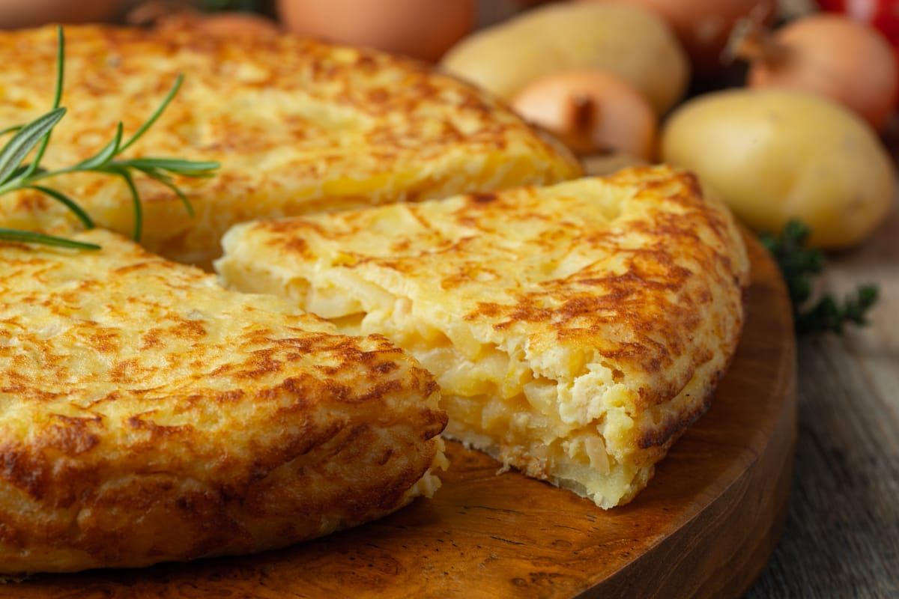

Spanish Tortilla

This easy and authentic Spanish omelette recipe combines egg, potato,
onion, olive oil, and salt in what is the best Spanish tortilla you'll
try.
Ingredients
- 2 lbs waxy potatoes such as Yukon Gold or red
- salt to taste
- 8 large eggs at room temperature
- 1 large white onion
- extra virgin olive oil for frying
Instructions
-
Peel the potatoes and rinse them under cold water. Slice them thinly
(about 5 mm thick) using a sharp knife or mandoline.
-
Pat the potato slices dry with paper towels and put them into a large
bowl, then sprinkle with salt and mix well.
-
Heat a ½ inch of high quality extra virgin olive oil in a large frying
pan over medium low heat. When the oil is hot, add the potatoes and add
more oil if necessary until all are covered.
-
Cook the potatoes on low heat for 20 minutes. They may break down a
little; this is okay.
-
While the potatoes are cooking, beat the eggs in a large bowl and season
with some salt.
-
Slice the onion as very thinly, and fry it in oil over medium heat in a
separate pan until it begins to caramelize, about 10-20 minutes. Add a
splash of water now and then to deglaze and prevent burning. Drain off
any excess oil and add to the egg mixture.
-
Once the potatoes have fried for 20 minutes, remove them with a skimmer
or spider into a colander and allow them to cool and drain for at least
5 minutes.
-
Once the potatoes have cooled, add the potatoes and onions to the egg
mixture and stir well. Let the egg mixture sit for about 15-20 minutes.
-
Pour out the frying oil from the potatoes and save it for another use.
Place the pan over medium-low heat and pour in the egg mixture
-
Cook over medium-low heat for about 6-8 minutes. Make sure the heat is
low enough or the tortilla will cook too quickly and be rubbery. You can
run a rubber spatula along the edges to make sure the tortilla isn't
sticking.
-
To flip the tortilla, take a large plate and put it over the pan and
flip quickly. Some uncooked egg mixture will likely slip out, but that's
okay. Slide the tortilla back into the pan to cook the other side, and
cook for another 6-8 minutes.
-
Slide the tortilla out of the pan onto a serving plate and let cool a
little before slicing and serving.
Notes
-
Let the egg, potato, and onion mixture sit for at least 15 minutes. This
makes a huge difference to the final result!
-
Cook the tortilla over low heat. Too high of heat will make a rubbery
tortilla.
-
Flip the tortilla quickly and confidently to minimize spillage. You've
got this!
-
First time making tortilla? Cook two smaller tortillas to make them
easier to flip.
-
Use great quality olive oil. The potatoes absorb a lot of oil, so choose
one that is good quality and has an excellent flavor.